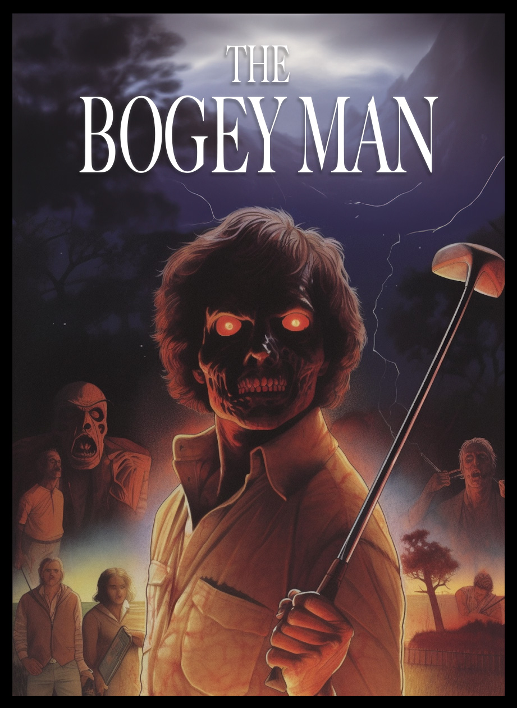

IN THIS ISSUE
The Meaning of Relativity
Danny Meyer
xasopheno •
xasopheno •
weresocool.org
From the record "Feather Father" available everyone October 2023
Danny Meyer - saxophone, computer programming and video
Jessika Kenney - vox and effects
Areni Agbabian - vox and singing bowls
Corey Fogel - drums and wrenches
Chris Cohen - recording and mixing
Video Effects - Alex Popov
Recorded at the Honeymoon Suite Studio, Los Angeles, CA
Mastered by Colin Bricker at Mighty Fine Productions, Denver, CO
the veil
Claire Rudolph
missing you, murphy
artemisia is a healing plant i closed my eyes and rubbed its velvety leaves and i felt your soft ears between my fingers a kind neighboring bather threaded wild fennel through my eucalyptus crown i searched the water for more floating ears a marigold drifted toward me and i held it to my forehead, throat, heart i think of you often i speak your name every day i will love you always i let the marigold go and it tumbled down the cliff into the sea
3 Pictures of the Moon
Molly Bolten
mollybolten •
mollybolten •
bandcamp •
letterboxd
I love to see people trying to take pictures of the moon with their phones. That gesture, the trying, is everything. You’re seeing something with your eyes, already a miracle, and you’re like “I bet this would also look really good in a small flat box.” You’re like “I have to find a way to capture this and show it to my friends.” You’re like “how do I express something beautiful???” The pictures will not turn out. But the effort is human.
Found Sound
Patrick Hart
tapesclub •
tapesclub
https://tapesclub.itch.io/found-sound
Found Sound is a sound art game about finding a relic from the past and uncovering its secrets. Unlock all modes to complete the game in your best time, or explore the object and create sound with it. Created in one week for Epic MegaJam 2023.
Cegorr
Dr Music
No one knows who he is, but he's irresponsibly high on his own emissions
Runaway
The Non-Renewed
thenonrenewed •
bandcamp
The first single release off of The Non-Renewed's debut album coming out in 2024.
Drums + Aux Percussion - Adrianna Perez
Bass - Joe Benevento
Keyboard, Synths - Meghan Mallon
Vocals - Megan Mallon
BGV - Mellik Gorton, Tania Maldonado, Mak Lambert
Additional Engineering - Grace Annunziato
Vocal Production - Adrianna Perez, Blake S.
Tracked, Produced, Mixed, Mastered - Judybelle Camangyan. Recorded in various locations around Colorado, Mixed and Mastered in Los Angeles.
Transcription of Itotele Passage
Robert Woods-LaDue
onkosonkosonkos
This is a musical transcription and analysis of an Itotele phrase played by Abdel, taken from a bata video posted by Manley "Piri" Lopez on Instagram.
The Bogey Man
Bob, Richard, and Devin
myspace
I. FADE IN to sunlight playing across rippling water. Ominous SYNTHESIZER MUSIC creeps into the scene as we PULL BACK to reveal a gently sloping hill in the foreground... an immaculately manicured green... a small triangular flag waving atop a thin pole In white, serif lettering, "THE BOGEY MAN" overlays the idyllic scene. WE DISSOLVE into slow tracking shots of the MANCINO HILLS GOLF COURSE in the airless still of a summer morning while the OPENING CREDITS roll... Steaming dew rising from a cart path... Sunlight cascades through drooping Eucalyptus branches... WE SLOWLY ZOOM into a lawn mower, motionless in a half-mowed fairway, as the synthesizer solidifies into a warbling drone... HARD CUT TO A RINGING PHONE, somewhere in a messy bedroom. MORNING LIGHT through bent venetian blinds. A HAND meanders from the bed across a side table -- ashtray, loose change -- and picks up. WE FOLLOW the spiraling phone cord from the cradle to the receiver, to a SCRAGGLY, late-20s, shirtless, bedsheets in disarray. "Hello? ... Oh ... " He rubs his eyes, still half asleep "Christ, again? ... Okay, just ... I'll be there in 15." He hangs up, sighs. CUT TO AN OLD PICKUP, rumbling into the parking lot of the MANCINO HILLS country club. Workers are hanging signs for the 36th ANNUAL MANCINO HILLS CLASSIC. GOLFERS mill about, readying their clubs, shooting the breeze. Our SCRAGGLY GUY parks in the “Maintenance” spot, hops out, and takes in the scene. "Hey Jim!" A call from down the row. Our SCRAGGLY GUY looks around and breaks into a wide smile "Ah, there's our future champ... (mock formality) Randal Augustine Miller, how've you been?" MILLER saunters up, glowing. Golfing gear, good-looking, athletic confidence, sly smile. They hug, back pats. MILLER, "Damn, it's been too long." JIM, "Well, shoot, with all the tours you're putting in, I'll be surprised if I ever see you again.” (beat) “Say-- you actually win anything yet?" MILLER punches him in the shoulder, "Just you wait! Getting closer every year. Anyway, how's the course?" JIM sighs, "Dick's pulled a vanishing act again." MILLER winces, "Ah. Terrible timing. He's still...?", makes a drinking motion. JIM, "Yup. Same as ever. Anyway, I better see Evanston before he has an aneurysm. Glad you made it. Let's catch up tonight." MILLER salutes, "You're on." He saunters off, tossing and catching a golf ball. INTERIOR, a plush office, a balding man in suspenders behind a mahogany desk, a map of the course takes up a whole wall. A knock at the door, the balding man stands up, "Come in." JIM walks in, "Hi Mr. Evanst--" EVANSTON cuts him off, fuming, "Three days to the classic and that jackass goes on a drunk. I'll wring his neck when he comes slinking back here..." He's up and gesturing to the map. "looks like he got through the first three holes, but that's it. Christ." EVANSTON mops the sweat from his forehead with a handkerchief, "The pros are already starting to fly in, you know the deal. Work around 'em if you can, but you'll have to do most of the work overnight. No way around it." He claps a hand on JIM’S SHOULDER, "Jim, I'm counting on you. Don't let me down." JIM strains a smile, "Yes, sir." BACK OUTSIDE, Jim's shoulders sag with the weight of the task ahead of him. Three night shifts before the tournament. Great. DISSOLVE TO MILLER, our underdog golf pro, stopping by the snack shack (counter open to the outside, under a mustard yellow overhang). BEHIND THE COUNTER, a spacey young couple are giggling conspiratorially, Joan Jett’s “Crimson and Clover” on the radio. MILLER, “Hiya-- one lemonade freeze, please.” THE GIRL, “Coming right up!” THE BOY considers Miller, “Hey wait a minute...” Looking at some photos on the wall, pointing “...that’s you!” MILLER laughs, “Yessir. Hometown hero.” THE GIRL abandons the lemonade, interested. Miller, “I grew up here. Golf team at Juniper high, taught at this club for years after.” With pride, “It’s my second year on the pro circuit. Crazy to be back here like this.” THE BOY, “Get out! That’s wild.” MILLER, “You two must be new here?” THE GIRL, “Yup! We’re just rolling through for the summer.” She extends a hand, a bright smile. “I’m Crystal. That’s Sweet Pea.” MILLER, a little unsure, “Glad to meet you.” Handshake. OFFSCREEN, a hearty laugh draws their attention... A meaty older guy with a bag of clubs is talking to two reporters. Next to him, a suited man with a clipboard checks his watch, and makes a comment. (Must be his MANAGER?) Biggelow makes a “what can you do?” gesture, the reporters laugh. SWEET PEA giggles, “Who’s that?” MILLER, “Ah. Not golfers, I take it?” BOTH, “Nope!” MILLER, “That... is the one-and-only Mitch Biggelow. PGA champ six years running.” Smiling ruefully, “He’s got this one in the bag, we’re all just playing for second place.” BIGELOW wraps up the chat and strolls their way, MANAGER in tow. He gives a rough-and-ready “Mornin’!” as he passes the group at the snack shack. MILLER, “Cheers.” (beat) CRYSTAL, remembering, “Oh! The lemonade!” SWEET PEA chuckles. II. DISSOLVE TO THE SUNSET, pastel clouds over the links. JIM and MILLER, at the tables outside the country club. Condensation beading on cans of Coors. MILLER, “...I don’t know -- I need some wins. I need some sponsors. If I don’t make something happen soon, I might just call it quits. Go back to teaching.” JIM, “No way -- you can’t be thinking like that. You’ve only been in it for a year or two, it’s not gonna happen overnight. Just gotta stick with it. Play the long game.” MILLER, “Yeah, you’re right.” (beat) A little more seriously, “Hey, what about you?” JIM shrugs, “Same old.” MILLER, tentatively, “Any luck finding...?” JIM, smiling, “...Somethin’ better than this bullshit job?” They laugh, “Tried. Gave up. You know how it is-- they find out you got a record, and that’s-that.” He takes a swig. MILLER, “Man, you were what, seventeen?” Shaking his head, “It’s a shame.” JIM, “Well, no helping it now. Evanston’s got me over a barrel -- he knows no one else is picking up the phone. Anyways,” He stands, stretches, “Could be worse. Plenty of fresh air, time to think. It’s not bad out here.” MEDIUM SHOT FROM BEHIND, the two take in the last fading colors of the sunset. MILLER stands, “It’s good to see you, man.” JIM, shouldering his equipment bag, “You too. Hey-- Good luck out there. We’re pulling for you.” He waves and strolls away. DISSOLVE TO the moon, bright and wide, stars scattered in the black of night, winking softly. REVERSE to a HIGH ANGLE on a telescope lens, PULLING BACK as a stately woman emerges from behind it, taking some notes in a leatherbound book. She gazes upward, smiling. We figure from her horn-rimmed glasses, tweedy attire, and salt & pepper hair that she's THE PROFESSOR. A soft rustle draws her attention -- JIM emerges from a nearby thicket, trailing an overloaded landscaping cart. Surprised, he looks up, "Oh --" THE PROFESSOR, "Hullo" in a continental accent. Jim approaches, curious. She grins sheepishly, "I understand you typically don't like people on the course at night, but I thought this was probably harmless," gesturing to the telescope. JIM shrugs, waves it off "Fine in my book. You in town for the tournament?" "Indeed. Well, the husband is anyway -- we flew in yesterday, I haven't quite caught up with the time change yet." Gesturing, "Have a look?" JIM sets his tools down and bends to the telescope... a cascading blanket of stars... "It's beautiful," straightening up, "You an astronomer?" She laughs, "Ah-- Historian, actually. You see," arcing a hand upward, "ancient culture across the globe; So much of their mythologies, their cultures, are tied into the night sky; the mystery of the heavens. All those long nights gazing up at the stars." Sheepishly, "I daresay I've picked up a bit of the habit." JIM smiles, "That's amazing." (beat) "Well," shouldering his tools, resuming his trek with the cart, "Don't forget to keep your eyes down here once in a while -- the sprinklers come on at two." THE PROFESSOR chuckles, opens her notebook, and gazes up. We PAN UP TO THE NIGHT SKY, lingering for a moment on the twinkling stars. DISSOLVE TO A HIGH ANGLE SHOT, slowly PULLING IN to SWEET PEA & CRYSTAL lying on their backs on the HOLE 3 GREEN, passing a joint. “Rhiannon” crackles from a transistor radio. CRYSTAL smooths a hand over his chest, "You ever, like, think about all those stars?" He takes a hefty toke and pulls her close, "All the time, baby." WE TRACK DOWN, below the sloping green to the nearby WATER HAZARD, where a cluster of BUBBLES rises and pops. CRYSTAL, "Did you hear that? SWEET PEA, "Hear what? It's nothing, baby," He starts to pull her in... but a louder SPLOP swivels them both to the water hazard. They disentangle, coming to their knees. SWEET PEA, "There's something in the water." CRYSTAL giggles "Maybe it's a alligator." He laughs, "No way -- I'll protect you, baby." Crawling forward to the lip of the hill, they peer down into the water hazard. (beat) Nothing. "C'mon, it's nothing..." SWEET PEA's hands begin to wander; CRYSTAL shushes him, staring intently into the black ripples. One bubble. Two. "See!?" CRYSTAL points excitedly, carefully scooching down the hillside toward the water. SWEET PEA scooching behind her, "Wait... there’s not, like... actually alligators here, though... right?" At the lip of the water hazard, CRYSTAL turns and gives him a weapons-grade eye roll-- AS A MANGLED CORPSE SPLASHES TO THE SURFACE-- WRECKED LIMBS JUTTING AT UNNATURAL ANGLES -- THE BOATED TONGUE SLIPPING FROM THE SLACK JAW-- REVERSE TO CRYSTAL, SCREAMING-- HARD CUT to a white sheet covering a DAMP MOUND on a stretcher. WE PULL BACK to find we’re on the green, white spotlights from two police trucks slicing the night. JIM, THE PROFESSOR, SWEET PEA, AND CRYSTAL stand awkwardly by a few bored police officers. A short walk away, MR. EVANSTON is talking to the POLICE CHIEF. EVANSTON, "...and you know how much business the classic brings in around here--" CHIEF, "I know, Chuck, I know!" EVANSTON "--we can't let this turn into a whole thing. Look, everyone knows Dick's been in the bottle for years now, we've tried to get him to sober up, but you know how it is--" CHIEF, "I know, Chuck, I know!" EVANSTON "--So he finally has one too many, passes out and hits his head on a rock or something -- people can drown in two inches of water, y'know?" The CHIEF raises a hand, "Look, Chuck... Nothing about this is screaming 'problem' to me. Dick was a drunk. He was harmless. Wallet was still on 'em. Can't see why anyone would jump to foul play here." The CHIEF puts an arm around MR. EVANSTON, walks them back to the waiting group, "I don't see any reason why we'd need to alert the press over something like this." EVANSTON, "Oh, I agree completely." THE CHIEF pats him on the shoulder and calls to the officers, "Okey, load him up, boys. Nothing to see here." CRYSTAL and SWEET PEA look confused; Crystal, "Wait, that's it?" Sweet Pea, "But-- but we saw the body, it was all... torn up!" One of the passing officers makes a show of sniffing around Sweet Pea, points with his thumb, "Oh sure, sure. Real reliable witness right here." The other officers guffaw as they load the stretcher into one of the police trucks. JIM and the PROFESSOR share an uneasy look. Climbing up into a truck’s open door, the Chief calls out to the group, "Now let's all get home and get some sleep." III. MORNING SUN blossoms into arcing water, a fountain at the center of a small lake. CLOSE on MILLER'S EYES, gauging the distance, the wind. He squares his stance in the tee box, slowly motioning the club once... twice... then PULSES WITH MUSCLE, raising the club behind his head, and DRIVING THE BALL like an uncoiling spring. WE FOLLOW the white dot as it soars into ether, seems to hang, imobile, against the billowing clouds... and plummets gracefully into a curving fairway. MILLER watches the scene with satisfaction. A gruff-but-chipper voice from behind him, "Not bad, kid. Not bad." WE TURN to see MITCH BIGGELOW: Ruddy complexion, slight paunch, white visor, oversize signet ring. Surprised, MILLER straightens, "Oh-- Thanks." "Keep swingin' like that, maybe you'll make something of yourself one day." BIGGELOW with a shark's smile. "Lemme show you how it's done." MILLER steps aside as BIGGELOW nonchalantly plants his tee'd ball into the grass and rises. With no preparation, he winds up -- and with seemingly no effort, sends the ball flying... flying... ten, twenty, thirty yards beyond MILLER's. BIGGELOW casually slots his driver into his bag and pulls out two cigars. "Smoke?" MILLER with a begrudging smile, "What the hell, why not?" BIGGELOW claps him on the back. "That's the spirit. now c'mon, let's get after it." They stride onto the fairway together. DISSOLVE TO THE MOON casting silver light on acres of lush grass, we PULL IN to the COUNTRY CLUB'S BAR, golden lights and activity... INSIDE, GOLF PROs and friends standing, sitting, chatting -- in a LONG TAKE, we find a WAITRESS and follow behind her mess of thick waves as she circulates, picking up empties. She passes BIGGELOW, his arm around a laughing MILLER... Somewhere in the crowd, we hear "Hey now, save some whisky for the shindig tomorrow!"... The WAITRESS finishes her rounds and passes through the double-doors into the KITCHEN, where she drops off her tray... and looks up at a CLOCK reading 12:15. She cracks her neck, pulls a pack of cigarettes from a pocket, calls to someone offscreen, "Taking ten," and turns -- it's chart-topping pop star LORDE in a surprise cameo. Tapping the pack, she winds through a dimly-lit corridor, through a door to the back of the building... and the door swings closed. CUT TO LORDE lighting up, outside by the dumpsters. The muffled sounds of the bar, crickets, and the swishing branches of a nearby copse. She lets her mind go blank, releasing the tension of a long night, and meanders toward the trees. POV SHOT from a few yards away, emerging from behind a dumpster, slowly walking towards her. CUT TO LORDE, spacing out... a TWIG SNAPS, she turns, "Oh!" -- and takes a step backward, "Sorry, you scared me." REVERSE, FROM BEHIND HER SHOULDER -- a figure silhouetted, indistinct in a shadow. A sliver of light reflects from a golf club. REVERSE TO LORDE, "Oh... We, uh, close the course at sunset. No lights, see." She smokes, uncomfortable. (beat) The figure remains silent, inches forward slowly. CLOSE ON WHITE TITLEIST GLOVES, tightening around the club's grip. LORDE, "Hey, uh, did you hear me?" increasingly tense as he approaches, backing slowly. "Sorry, are--?" THE FIGURE RAISES THE CLUB AND CHARGES-- LORDE BOLTS, SCREAMING. CHAOS as she runs into nearby trees, tangles of hanging Eucalyptus, uneven ground -- THE FIGURE CLOSE BEHIND. BRANCHES -- LORDE frantically pushes them away, darting between the peeling trunks. THE FIGURE panting in ragged, guttural breaths. SHE TRIPS, tumbling on a patch of uneven roots -- THE FIGURE CATCHES UP and SLAMS THE CLUB DOWN -- SHE ROLLS, AVOIDING THE BLOW -- SHE KICKS at the FIGURE -- IT STUMBLES BACKWARD -- SHE JUMPS AND DASHES onto the EMPTY FAIRWAY, trying to OUTRUN THE ATTACKER. LONG SHOT OVER HER SHOULDER, running: THE FIGURE CHARGING FROM THE DARKNESS of the trees, CLUB IN HAND. SHE'S RUNNING at full pace up a SLIGHT INCLINE. Without stopping she TURNS TO GAUGE THE DISTANCE -- THE FIGURE IS GAINING, GAINING-- SUDDENLY, SHE FALLS OUT OF FRAME-- HIGH ANGLE, the sloping green DROPS INTO A SAND TRAP-- SHE MISSED IT and fell right in-- PANICKING, she tries to GET UP-- BUT A SHADOW COVERS her -- WE FOLLOW her gaze UP TO THE FIGURE, at the crest of the green, CLUB RAISED-- SHE SCREAMS-- HARD CUT to a trunk slamming -- a police car, siren off. The OFFICER slides into the driver seat, turns off the spotlights. They’re wrapping up. We slowly PULL BACK to find we’re on the GREEN, just above THE SANDTRAP. The CHIEF climbs into the passenger seat of a waiting cop car, and casts a knowing look at MR. EVANSTON. EVANSTON nods and waves, turns and walks to JIM, with his cart of tools, his face grim. WE REVERSE to see they’re standing on the edge of the green, looking down into the sandtrap, saturated with blood. OFF-CAMERA, the police cruisers drive into the distance. MR. EVANS, solemnly, “This never happened. We need this clean by morning.” Jim’s face is a stone mask, as he picks up a shovel. DISSOLVE to Jim shoveling the bloody sand into a trash bag. He’s maybe halfway done. He stops for a moment to wipe his forehead and drink from a canteen. As he tilts his head, a REFLECTION in the sand trap catches his eye. He closes the canteen, bends down and retrieves the item. CLOSE ON THE STRANGE OBJECT in JIM’S HAND, as he examines it. It’s stone. A little oval sculpture? A beetle? He turns it over: There’s MARKINGS on the back. Symbols? Some wavy lines, a hand? ...Hieroglyphics? He’s not sure what to think... But there’s so much work to do before sunrise. He pockets the STRANGE OBJECT and exhales deeply. WE SLOWLY PULL BACK as he shovels... and shovels... and shovels... IV. SLOW DISSOLVE TO waving trees in the purple gloaming... undulating green expanses... THE SUN cresting a hill... And finally to the parking lot, where the GOLF PROS are unloading, stretching their backs. JIM'S TRUCK, sagging under the weight of BLACK TRASH BAGS, pulls into the "maintenance" spot. JIM exits the cab slowly, exhausted. He lights a cigarette as MILLER waves and saunters over, "Hey, Jimbo..." looks him over, "Wow. You look like shit." JIM coughs a laugh, "Long night." MILLER, "Hey, uh..." he leans in a bit closer, his expression darkening, "There's some rumors going around. Something about those two hippies at the snack shack, police cars on the course overnight... what's going on?" JIM takes a moment to look around, decides to level with him, "Something bad's going down. Those kids, they found Dick’s body in a water hazard. Could've been an accident. (beat) But then last night, a waitress--" He smokes, steadies himself, "I found her in the sandtrap on twelve. Just... mangled..." tapping his head, "Smashed in..." MILLER, "Jesus." JIM, "Evanston and the police are keeping it quiet, they don't want to cancel the classic." Gesturing to the trash bags, "After the cops took the body, I spent all night cleaning it up." (beat) MILLER, "Well, shit-- Should we...? Should we tell the press?" JIM, "Miller, I can't lose this job. I'm barely hanging on as it is. And this-- this could be your shot. You're so close to making the invitational this year -- you don't wanna throw that away, do you?" MILLER considers. JIM, "I dunno-- maybe the two bodies, maybe it's just a fluke. Unrelated." He puts out his cigarette. "Why don't we just ride it out. They’ll get it sorted after The Classic’s over." MILLER looks unsatisfied. Seems like JIM’s putting his head in the sand... but JIM’S right, he’s unwilling to throw away his golden opportunity. "Okay." JIM puts a hand on his shoulder, "Just... stay off the links at night, okay?" DISSOLVE TO INTERIOR BATHROOM, JIM washes the dirt from his hands and face. He LOOKS at his EXHAUSTED FACE in the mirror... and remembers something. He pulls the STRANGE OBJECT from his pocket. OUTSIDE, JIM scans the tables and chairs where pros and reporters are having coffee and danishes. He spots THE PROFESSOR, alone, reading a book with her morning tea. He approaches. JIM, a little awkwardly, "Hi... Professor Ipsom?" The PROFESSOR smiles, "Please, just Lauren." Gesturing, "Have a sit?" JIM, "Thanks." The PROFESSOR leans in, growing more serious, "Have you heard anything more about the other night?" JIM, "Actually, that's what I wanted to talk to you about. You said you were a historian?" He takes the ARTIFACT from his pocket and passes it to her. Her brow furrows as she examines it. "Looks Egyptian. Heavy weathering. Doesn't look like a replica... Where in the world did you get this?" JIM, quietly, "There was another body on the course last night. Don't tell anyone. I found this nearby. Any idea what it might be?" THE PROFESSOR considers, "That's rather outside my area... but I do have colleagues at the institute who would know." She checks her watch, "It's early afternoon there, they should still be in. I'll make some phone calls." She finishes her tea, they stand, "Will you be at the opening gala tonight? We could talk then." JIM nods, "I'll be there." DISSOLVE TO JIM walking back to his pickup. He’s running on fumes. He sees something off-screen... And walks over to a wood-paneled station wagon. The hatchback is open, boxes and suitcases in the back. SWEET PEA and CRYSTAL approach from behind the snack shack, SWEET PEA carrying a cardboard box, the transistor radio visible inside. CRYSTAL, “Hey Jim.” JIM, “Hey.” SWEET PEA places the box in the trunk. An awkward pause. CRYSTAL shrugs, “We’re moving on.” She looks tired. SWEET PEA leans against the hatchback, “Bad vibes, man. We don’t wanna stick around to see how this ends.” JIM nods, “I gotcha.” WE PULL BACK as SWEET PEA closes the hatchback, and CRYSTAL leans in to give JIM a long hug. CRYSTAL, “Be careful Jim... something bad’s out there. I can feel it.” DISSOLVE TO MILLER, sizing up a fairway shot. BIGGELOW behind him, keeping a sharp eye on the young upstart. MILLER practices his stroke once, twice, and hits. WE FOLLOW the ball as it arcs, unsteadily, and drops into the trees. MILLER's expression tightens in frustration. BIGGELOW, "Something on your mind, kid? You seem distracted." MILLER, evasively, "Nah, just... having an off day." BIGGELOW can tell he's dodging, but doesn't press. He closes the distance between them, and they head down the fairway together. BIGGELOW, "Just remember kid, when you're out here on the course, that's your whole world. Whatever you got on your mind, whatever's tugging at you..." They stop at BIGGELOW’s ball, "That's all somewhere else. Just some bad dream you're waking up from." He straightens, takes a deep breath. "Out here, you got the wind, you got the green, and you got the ball..." He locks eyes with MILLER, smiles, and smoothly coils into an effortless stroke. The ball floats motionless against the endless sky, and gently descends to the center of the green. BIGGELOW steps to MILLER, and puts a hand on the younger pro’s shoulder, "And that's all that matters." CLOSE ON BIGGELOW'S WHITE TITLEIST GLOVES. MILLER takes the words to heart, his cloudy expression lifting. He nods, "Got it." V. CRIMSON CLOUDS ripple against the SETTING SUN. THE COUNTRY CLUB, glistening with lights and activity. Golf carts pulling up to the lot, men in summer suits holding the door for women in heels and strappy dresses. REVERSE TO JIM, out of place in a cheap, outdated suit. INSIDE, champagne and hors d'oeuvre. Jazz combo. Spirited conversation. MILLER flirting with a reporter. He spots JIM, smoothly ends the conversation, and walks over. MILLER, “Hey.” JIM, “Hi. Have you seen--? Ah, there.” ACROSS THE ROOM, THE PROFESSOR waits by the veranda, with an untouched flute of champagne. They cross over, MILLER introduces himself. THE PROFESSOR, looking around, “why don’t we get some air?” THE VERANDA is empty, the crowd noise muffled by the windows. The last daylight fading. THE PROFESSOR hands the STRANGE OBJECT to JIM, who passes it to a confused-looking MILLER. She pulls out a few notes, “Professor Crane is our Egyptologist. Said he wouldn’t be able to verify the item’s authenticity without seeing it in person, but from my description, he assumed it was authentic, said it was--” (checks notes) “-- too obscure to profitably forge. It’s an AMULET, a charm of sorts, from a little-known group of opponents of the Pharaoh Akhenaten, mid-1300s B.C.” JIM and MILLER, a little lost. Remembering her non--academic company, she backs up a little, “Ah, Akhenaten was... kind of an odd bird. He uprooted the whole capital from Memphis to a newly-built temple complex in the desert and changed the official religion to a sort of cult around a sun god.” JIM and MILLER, still lost. “Anyway, it didn’t last long. As soon as he died, everyone went right back to how it was. But, when he was in power, there were apparently several groups plotting to overthrow him and restore the old order. This scarab amulet is from one of these.” “The record is sparse, but this group was apparently obsessed with returning the Egyptian religion to its prior polytheistic mode. They were dedicated to Shezmu, the god of wine, oil, perfume... and blood. They apparently performed rituals involving human sacrifice.” MILLER quickly hands the AMULET back to JIM. THE PROFESSOR turns a note over, “These amulets were used in some kind of ceremony, where a weapon was enchanted with the spirit of Shezmu. Shezmu would then possess whomever held the weapon, and, ah, sacrifice the waiting captive, offering their blood to the gods.” JIM, “Jesus.” (beat) “But, like, how did it get here?” MILLER, gesturing, “Probably half these guys here play the Egyptian Open. Maybe one of them picked it up there?” THE PROFESSOR, “True, It’s not unusual for lesser artifacts like this to be sold as souvenirs. Slightly unethical, but...” she shrugs, tucking the papers in her pocket. JIM, slowly, “So... you’re saying someone here’s... possessed by an ancient Egyptian death god?” THE PROFESSOR, “Well, I don’t know if I’m saying that, exactly... But that’s the meaning behind that scarab amulet, yes.” (beat) MILLER, “But, like, it could just be some psycho killing people, though.” THE PROFESSOR, quickly, “Well yes, of course.” (beat) They look at one another, not sure where or how to proceed. THE PROFESSOR takes a long drink of champagne. WE DRIFT BACK INSIDE, where the party is becoming more raucous, and FIND BIGGELOW holding court. “Well I hate to leave my adoring public,” he crows, “but I absolutely must see a man about a horse -- a big one!” The circle guffaws. His MANAGER calls out, “Don’t forget! You got Sports Illustrated at nine!” BIGGELOW, waving him off, “I know, I know.” WE FOLLOW BIGGELOW as he maneuvers through the crowd, waving and shaking hands, he winks at a reporter, “Back in five, darlin’.” He strolls to an out-of-the-way hall, and stops EVANSTON’S impressive mahogany door. Knocking, “Hey Chuck, you in there?” (beat) No answer. He tries the handle, the door opens, “Chuck, you here?” he calls into the dark. Shrugging, he flicks on the light and strolls across the room to EVANSTON’S PRIVATE BATHROOM, “Don’t mind if I do!” He closes the door. WE HEAR HIM WHISTLE as he unzips and urinates... while we SLOWLY TRACK BACKWARD. WE HEAR THE DOOR close, the CROWD NOISE MUFFLING. CLOSE ON A WHITE TITLEIST GLOVE flicking the light switch OFF. In the dark, FOOTFALLS on the push carpet. WE HEAR THE SINK RUNNING inside the bathroom, and TRACK FORWARD as the bathroom door opens. BIGGELOW emerges, wiping his hands on a towel-- STARTLED, HE LOOKS UP-- THE CLUB SWINGS DOWN, CRUSHING HIS HEAD IN A BLUR OF CARNAGE-- BIGGELOW’S RUINED FACE SLAMS INTO THE GROUND-- WE FOLLOW THE CLUB AS IT SLOWLY RISES-- COVERED IN DRIPPING GORE, IT HOVERS... AND PLUNGES-- HARD CUT TO EXTERIOR of the Country Club, the Opening Gala in full swing as the SILVERY MOON hangs, enormous, over the lively scene. DISSOLVE TO INTERIOR, IN A SERIES OF MEDIUM SHOTS, WE FIND BIGGELOW’S MANAGER in the swirl of the party, talking with an impatient-looking REPORTER. He gestures to his watch and makes a “circle around” motion, wading into the crowd. ANGLE ON THE JAZZ COMBO as they kick into an uptempo number. BIGGELOW’S MANAGER in the crowd, his words lost in the PARTY NOISE. He asks a GOLF PRO something, the GOLF PRO shakes his head, shrugs. AGAIN, with another GOLF PRO. Same deal. FINALLY, he finds EVANSTON. A quick chat. EVANSTON gestures to the out-of-the-way hallway, and they GO TOGETHER. IN THE HALLWAY, the PARTY NOISE softens a bit. BIGGELOW’S MANAGER, “...and honestly it drives me up the wall sometimes!” EVANSTON, chuckling, “Well that’s Mitch for ‘ya. Anyway, I wasn’t about to let the PGA champ do his business in some public restroom with the rest of these apes.” AT THE OFFICE DOOR, KNOCKING, “Hey Mitch! You in there? S.I.’s been waiting twenty minutes.” CLOSE ON EVANSTON’s hand, turning the knob, opening the door... FROM INSIDE THE OFFICE, the expanding tranche of light reveals long, dark splatters across the floor... the walls... the furniture... CLOSE ON THE WRECKED BODY OF MITCH BIGGELOW. HARD CUT TO THE HALLWAY -- EVANSTON CLOSES THE DOOR. Hands shaking, he pulls out his keys and LOCKS THE DOOR. BIGGELOW’S MANAGER, shocked and queasy, slumps against the wall. THE PARTY NOISE still going full-tilt. TIME SWIMS for the two men in this horrible inflection point. EVANSTON mops his sweating brow, takes a moment to think. (beat) EVANSTON, "He's sick. His ex-wife called him in for some emergency. Had to drop at the last minute. I don't know. I don’t care. Make something up." THE MANAGER, still distant with shock, takes in what he’s saying. EVANSTON, “Next week... he has an accident. Heart attack. Boat accident at his place in Cabo.” EVANSTON reaches into his coat, pulls out a chequebook, a thick pen. THE PARTY NOISE notches up as the JAZZ COMBO launches into another hot chart. CLOSE ON Evanston signing a BLANK CHEQUE... tearing it off and holding it out to the MANAGER... EVANSTON looks THE MANAGER dead in the eye, "Don't tell anyone." (dramatic beat) THE MANAGER takes the cheque. VI. V.O., ANNOUNCER 1, “... and with this late-breaking news that Biggelow has unexpectedly dropped for health concerns, the Mencino Hills Classic has really become an open field...” WE PAN over crowds gathering outside the COUNTRY CLUB. THE GOLF PROs warming up, applying sunscreen, getting their game faces on... CLOSE ON an unnamed pro strapping on WHITE TITLEIST GLOVES. V.O., ANNOUNCER 1 (cont) “...It’s really anyone’s for the taking.” V.O., ACCOUNCER 2, “Oh absolutely. I’ve got my eyes on Tim Elsevere, Brian Jamestown, and Hardy Petnick -- all of whom came in second to Biggelow more than once last year...” WE FOLLOW the crowd, as ushers motion them into the corral around the first hole. ANGLE ON MILLER, getting in the zone, visor pulled low, stretching his arms. JIM, under the shade of a tree, arms crossed, watching. Scanning the crowd, wary. THE PROFESSOR, in broad sunglasses, looking distracted as her husband chats with another spectator. V.O., ANNOUNCER 2, PRE-LAP “... and let’s not forget the hometown hero Jake Miller. His record isn’t quite as strong -- but he knows this course like the back of his hand. Definitely one to watch.” INTERIOR BROADCAST BOOTH, announcers in linen blazers, chunky headphones. Papers on the desk by the gooseneck mics, a STATS GUY with clipboard and walkie-talkie hovering behind. ANNOUNCER 2 disengages the red “ON” button by the mic. THE STATS GUY leans in, “T-minus ten.” THE ANNOUNCERS nod, WE LOOK UP to the oversize clock... DISSOLVE TO MILLER and two other golfers at the tee-off. An OFFICIAL stands nearby. The crowd’s SILENCE and EXPECTANT TENSION mean that the tournament has begun. One of the other golfers squares up... and DRIVES. Golf claps from the crowd. CLOSE ON MILLER, controlling his nerves, breathing in, breathing out. THE OFFICIAL nods to MILLER. MILLER steps to the tee box. To himself, “You've got the wind. You’ve got the green. And that’s all that matters.” CLOSE ON HIS HAND pressing the tee’d ball into the grass. HE RISES -- MILLER’S POV, scanning the lush, green expanse before him. REVERSE, CLOSE ON MILLER as he squares up in the electrical silence. He goes through his practice swings. To himself, “All that other stuff. It’s just a bad dream.” Poised for the drive, MILLER’S body comes to a perfect rest. SLOW MOTION as MILLER arcs the club backward, in complete SILENCE except a long, slow inhale... A moment of pure potential.... REAL-TIME as the CLUB SWINGS DOWN, flakes of grass scattering-- THE BALL SOARING ON AN UNBELIEVABLE TRAJECTORY... hovering majestically mid-air... suspended in time like a dream... And gracefully floating to Earth well beyond the balls of his competitors. BACK ON MILLER, bringing himself again to rest. Golf claps gently raining down around him. He pushes his visor up and acknowledges the cheering crowd. HIS GAZE finds JIM in the shade of the tree. JIM, a look of pride for his friend, gives him a nod. MILLER nods back. MILLER steps away from the tee box, slides his driver into his golf bag on the back of a cart. To himself, “It was all just a bad dream...” DISSOLVE TO A SERIES OF SHOTS from the tournament: The thrill of a sunk put. A disastrous chip into a water hazard. Dramatic tee-offs! MR. EVANSTON, sweating in the sun, dropping alka seltzer into a glass of water... His mahogany office door, tightly locked-- HARD CUT TO A LONG SHOT OF THE GOLF COURSE. V.O., ANNOUNCER 1, “Well, it’s been quite a day here at Mencino Hills. Without Bigelow in the picture, the whole field is attacking with renewed fervor. Here at the final hole, we have Elseveier, Petnick, and Miller all tied up at six under. It’s anyone’s match to win...” DISSOLVE TO MILLER, waiting behind two competitors to tee off. The SILENT CROWD and OFFICIAL nearby. JIM in the front, against the rope marking the crowd area. The TENSION IS INCREDIBLE. A competitor squares up... drives... it’s a long shot... SOLID. Right on the fairway. SLOW PULL INTO MILLER, clapping politely, focusing. SUDDENLY-- AS IF UNDERWATER, A FRAGMENT OF STRANGE, ARCHAIC LANGUAGE-- MILLER SNAPS BOLT UPRIGHT, WHIRLS AROUND-- SHRIEKING SYNTHESIZERS-- THE CROWD-- THE OFFICIAL-- MILLER’S POV, FRANTICALLY LOOKING AROUND-- REVERSE TO MILLER -- EYES WIDE, PANICKING-- ...BUT THERE’S NOTHING. ...There’s nothing. ...Nothing. MILLER’S POV -- JIM, at the rope, trying to figure out what’s going on -- they LOCK EYES. JIM motions a silent question. MILLER, the throbbing pulse of adrenaline wreaking havoc, takes a deep breath... blinks slowly. THE SYNTHESIZER wails burble and collapse into a low drone. He motions to JIM: It’s okay... it’s okay. MILLER, taking deep breaths. Deep breaths. THE OFFICIAL catches his attention, and motions to him. UNSETTLED, MILLER slowly approaches the tee box. To himself, “All that other stuff...” CLOSE ON HIS HAND, plunging the tee’d ball into the perfectly-manicured grass, a small halo of soil forming around the tee in a perfect circle. “...it’s all just a bad dream.” THE SYNTHESIZER DRONE begins to build in intensity. He exhales, steadying himself -- taking a practice swing, “...all just a bad dream.” Motionless, he feels the wind sliding across the sheen of sweat covering his face. He squares up and gets into position. SLOW MOTION -- A high SYNTHESIZER TONE fades in and DESCENDS -- as a droplet of sweat detaches from his chin and drops onto his WHITE TITLEIST GLOVES, tightening their grip on the club. “...it’s all...” STILL SLOW, LOW ANGLE, looking up at MILLER, his eyes closed tightly -- FRAMED AGAINST BILLOWING CLOUDS -- as he raises his club for the drive... EUCALYPTUS LEAVES TWISTING IN THE WIND-- SYNTHESIZER DRONES BUILDING TO PEAK INTENSITY-- SLOW MOTION CREEPING TO AN ABSOLUTE STANDSTILL-- AS HIS CLUB REACHES THE APEX OF THE SWING “...just a bad dream” CUT TO BLACK. ROLL CREDITS.
Thank you for visiting QUANTITY MAGAZINE!
This thing is run by:
Molly Bolten
Devin Smith
Mark Pascucci-Clifford
If you would like to contribute, email us!!